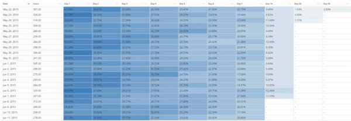
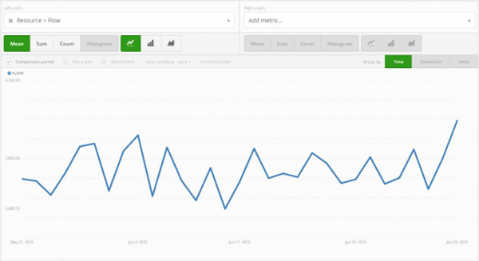
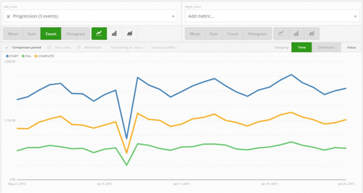

原文：15 Metrics All Game Developers Should Know by Heart
手游数据分析听起来可能感觉很复杂，因为当提及指标问题，往往需要记录成百上千的数据。简单来说，有下载量、访问量和日活跃(DAU)这些指标。这些数据相对来说比较简单，并且衡量的是具体行为。更复杂一些的指标有流失、付费玩家平均贡献（ARPPU）和日活跃用户（DAU）与用户活跃度(DAU/MAU)。这些指标解释起来没那么直观，而且他们衍生出的问题可能比答案更多。
我要等多久才知道一个用户已经流失了呢？
“一个好的付费玩家平均贡献是什么样的呢？”
到目前为止，我们还没有介绍更先进的分析概念，比如细分、漏斗和自定义事件。现在，我们会继续讲解这些指标，并看看这些数据实际可以告诉我们游戏存在哪些问题。然而对于游戏分析来说，没有放之四海而皆准的原则，一些有用的指标可以帮助我们看清怎样去改善游戏。
基础指标
日活跃用户DAU
让我们从基础指标DAU开始，DAU是指任何一天在应用程序上至少有一次访问的独立用户数量。仅凭DAU和其他指标不会更深入的展示应用程序的表现。然而，了解这些简单的指标对于后续的分析讨论是一个好的开始。
让我们来看一个例子，一个硬核游戏拥有10000个用户，这些用户每天都会玩几次并给游戏带来收入。这与拥有1,000,000活跃用户的新闻客户端或消息应用程序相比，他们虽有很高的活跃但是没有盈利机制。再以另一款应用程序为例，它可能留存很差，但可能在不断持续的导入用户。今天，他们拥有5000000的日活跃用户，但是明天日活跃用户可能减少到100000。日活跃用户数仅仅是一个数据快照，其他数据也同样重要，但是没有一个比庞大的用户群更重要的数据了。
登录
任何用户在任何时间（不再区分独立用户），只要打开一次应用程序，就算一次登录。与日活跃用户相似，登录的总次数需要其他数据支撑才能成为一个有用的数据。具体来说，应该关注每日活跃用户登录的平均数，因为这个指标可以告诉我们用户参与游戏的程度。
应用程序的类型的确会影响登录与日活跃用户，因为一些类型的游戏可以使用户有更频繁的登录。如果用户每天登录5-10次，那就很明确的认为他们喜欢这个游戏；如果用户每天只打开这个应用程序一两次，那这个游戏就不可能获得他们长时间的关注。
用户活跃度（DAU/MAU）
日活跃用户与月活跃用户的比值显示了一个应用程序的用户留存，也通常被称为游戏粘性。这个指标也显示了用户登录应用程序的频率，举例说明会更易于理解。
假如一个应用程序有100000个月活跃用户和平均15000个日活跃用户，那么日活跃用户与月活跃用户比值应该是15%。这也就是说每个用户在当月平均登录了大约15%的天数（30*15%=4.5天）。
因为这是一个比值，日活跃用户与月活跃用户比指只可能是一个0到1之间的值。值越接近1，意味着用户打开这个应用程序的天数越多。流行的社交网络应用，如Facebook，就曾报道日活跃用户与月活跃用户比高达50%，但是大多数成功游戏应用的比值大概接近20%。
留存
对免费游戏来说，留存可以说是最重要的指标，成功的免费游戏和用户之间建立了一种长期关系。享受这种体验的用户愿意为在游戏中争取竞争优势而付费，游戏需要有较高的留存并且需要用户长时间去建立这种关系。
计算留存，会根据下载应用程序的时间把用户分组，用户下载当天记为0，如果用户在第二天再次打开应用程序，则记为1，他们就会被标记为留存用户。如果他们没有打开这个应用程序，那么就不会被标记。这种计算方式是用于每天记录那些已经下载过游戏的用户群组。常见的记录留存的天数是1、3、7和30。

为了计算留存，将会根据下载应用程序的时间把用户分组
付费转化率
现在继续来讲大家都喜欢的话题：钱！以上所讲的指标主要是用来衡量游戏和用户之间的关系，用户使用应用程序的频率。但是对于大多数的独立研发者来说，最重要的标准是游戏是否能够赚足够的钱。
转化率衡量的是在一定的时间内，付费独立用户占总独立用户的百分比，也可以衡量在免费游戏中广告的转化率。
让用户在免费游戏中付钱是很难的事情。但是，和许多其他行业一样，在免费游戏中重复消费者会为游戏带来大部分的收益。通过提供给用户具有极高价值的虚拟物品来鼓励他们进行第一次付费转化。
日活跃用户平均收益ARPDAU
日活跃用户平均收益（ARPDAU）是在游戏中经常被讨论的指标之一。ARPDAU是一个很有用的指标，因为它可以在日常基础数据中了解游戏的收益表现。
ARPDAU是追踪记录用户在付费之前以及在付费过程中行为的一个很好的指标。获取新用户之前，一定要知道ARPDAU的范围以及它是如何正常波动的。在获取新用户过程中，根据来源分割新用户，并看看在你应用程序上哪个网络或游戏表现最好。我们会在之后的帖子里讨论用户细分问题。
每付费用户平均收益ARPPU
每付费用户平均收益（ARPPU）衡量在游戏中已经完成付费的用户，这个指标基于游戏类型会有很大的差异。硬核游戏往往有更高的收益标准，但是相比休闲类游戏来说，却缺少更大的付费吸引力。
流失
流失和留存相反，统计有多少玩家下载了游戏但是没有再继续玩。预售模式中，流失指标具有重要意义，但是免费游戏中又会有一些差别。
主要考量的是用户玩游戏的风格。不管用户是否付费，在预售模式中，流失是不可避免的。在免费游戏中一些玩家可能每天会玩多次，然而更多的休闲玩家一周可能登录一两次。为了区分玩家之间这些不同，我们把在28天内没有玩的用户定义为流失用户。
游戏内指标
除了了解用户参与度、留存和收益，权衡游戏经济也是非常重要的。如果赚取虚拟币太容易，那么用户就没有需求去付费，但是用户仍然需要足够的虚拟货币来享受和探索游戏，两者之间有一个有趣的方式，下面我们就来介绍。
资源的产出和消耗
产出是用户可以赚取虚拟货币的方式。在游戏数据分析中，产出指标是用来衡量用户赚取的货币数量，它还包括仁慈的游戏设计者慷慨地给予用户任何形式的货币。
消耗和产出是相反的。是指用户在游戏中消费的虚拟货币，产出和消耗都可以适用于硬通货币和代币（虚拟货币）。在分析中要把这些不同类型的货币单独分析。
随着资源的产出和消耗就形成了资源的流通。资源流通是玩家消费和赚取货币收支平衡的表现，一般来说资源流通应该像下面曲线图中的一样稳定。

资源流通是玩家消费和赚取货币收支平衡的表现
如果图表的曲线与指数曲线一样向上倾斜，那表示玩家手中有过多的货币，那么他们就没有必要去充值。如果图表中曲线向下倾斜并趋近于0，表示在游戏中玩家由于资源匮乏不能做任何事。
开始次数，失败次数或成功次数
最后，我们来看一些进阶指标。很多类型的游戏都有一个关卡系统。开始次数指标衡量的是一个玩家挑战一个新关卡的次数。
另一个指标是失败次数。当一个用户挑战下一个新的关卡但是没有完成就会出现失败。
如你所料，成功次数指标记录的是用户完成某一关卡的次数，把这三个结合在一起可以帮助你分析游戏中的关卡问题。

开始，失败或成功
游戏的难度设计合理吗？用户是否意外地被卡在某一关卡上？在哪一关用户玩得最愉快并且会重复玩？开始、失败和完成次数可以回答这些的问题。
然而，对于游戏分析没有万全之策，以上提及的指标仅仅是能帮我们达到分析领域的入门标准。手游分析最重要的是要建立自己游戏的标准。一旦了解了用户行为，就可以权衡一些问题，比如游戏更新的影响或者是改变获取用户的策略。